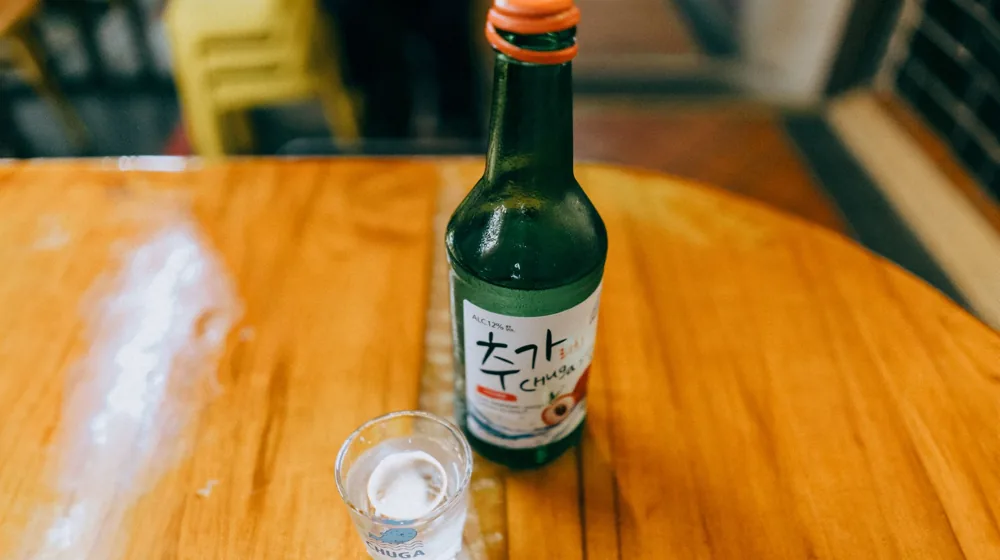

전통주 구독, 어떤 서비스가 나에게 맞을까? 3가지 핵심 비교 포인트
사진: Viridiana Rivera / Pexels (무료 이미지, 출처 표기)
전통주 구독 서비스, 현명하게 선택하는 3가지 기준

다채로운 맛과 이야기가 담긴 전통주(우리 땅에서 나는 농산물로 빚은 술)를 집에서 편안하게 받아보는 전통주 구독 서비스가 인기를 얻고 있습니다. 하지만 여러 서비스 중 어떤 것을 골라야 할지 막막하게 느껴질 때가 많습니다. 이 글에서는 2026년 11월 기준, 주요 전통주 구독 서비스를 비교하고, 나에게 꼭 맞는 선택을 위한 핵심 가이드를 제공합니다.
단순한 술 배송을 넘어, 각 서비스의 큐레이션 방식, 가격대, 추가 혜택을 중심으로 어떤 서비스를 선택해야 후회 없는 경험을 할 수 있을지 함께 살펴보겠습니다.
내 취향에 맞는 전통주 구독, 무엇을 고려해야 할까?
전통주 구독 서비스를 선택할 때는 개인의 음주 취향, 예산, 기대하는 경험 수준 등을 종합적으로 고려해야 합니다. 다음 세 가지 기준을 통해 나에게 적합한 서비스를 가려낼 수 있습니다.
- 큐레이션 및 종류: 매월 어떤 종류의 술을 받을 수 있는지 확인하세요. 초보자를 위한 대중적인 술 위주인지, 희귀하거나 스토리가 있는 술을 깊이 있게 다루는지 등 서비스별 큐레이션 방향이 다릅니다. 특정 지역의 술이나 특정 주종(막걸리, 약주, 증류주 등)에 특화된 서비스도 있습니다.
- 가격 및 구성: 구독료에 포함된 술의 개수, 용량, 부가적인 구성품(잔, 안주, 해설지 등)을 비교합니다. 월 구독료가 너무 저렴하다면 구성이 단조로울 수 있고, 비싸다면 그만큼 희소성 있는 술이나 고급 안주가 포함될 가능성이 높습니다.
- 부가 서비스 및 유연성: 배송 주기 변경, 구독 일시정지, 특정 주종 제외 등 구독 옵션의 유연성을 확인합니다. 또한, 테이스팅 노트 제공, 양조장 탐방 기회, 온라인 커뮤니티 운영 등 추가적인 경험을 제공하는지도 중요한 고려 사항입니다.
주요 전통주 구독 서비스 전격 비교 (2026년 11월 기준)
현재 시장에는 다양한 특징을 가진 전통주 구독 서비스들이 존재합니다. 여기서는 대표적인 유형을 기준으로 서비스를 비교하여 여러분의 선택을 돕고자 합니다. 실제 서비스명은 변경될 수 있으므로, 아래는 일반적인 서비스 유형으로 이해해 주시기 바랍니다. 정확한 사항은 각 서비스의 공식 홈페이지에서 다시 확인하시길 권장합니다.
구독 전 반드시 알아야 할 주의사항
전통주 구독 서비스를 시작하기 전에 몇 가지 사항을 미리 확인하여 불필요한 불편을 줄일 수 있습니다.
- 성인 인증: 전통주는 주류이므로 모든 구독 서비스는 가입 시 성인 인증을 필수적으로 요구합니다. 배송 시에도 본인 확인을 거칠 수 있습니다.
- 배송 및 보관: 주류는 온도에 민감하므로 배송 과정을 확인하고, 수령 후에는 서비스에서 안내하는 적절한 보관 방법을 따르는 것이 중요합니다. 특히 막걸리 등 생주는 유통기한이 짧으므로 빠르게 소비해야 합니다.
- 취소 및 환불 규정: 서비스마다 구독 취소 및 환불 규정이 다릅니다. 정기 결제가 이루어지기 전에 언제든지 취소할 수 있는지, 위약금은 없는지 등을 미리 확인해야 합니다.
- 품절 및 대체: 간혹 특정 전통주가 품절되어 다른 술로 대체될 수 있습니다. 이러한 상황 발생 시 어떤 방식으로 고객에게 안내하고 대처하는지 살펴보세요.
전통주 구독, 더 맛있게 즐기는 팁
구독한 전통주를 더욱 특별하게 즐길 수 있는 몇 가지 팁을 알려드립니다.
- 페어링 즐기기: 함께 제공되는 해설지나 서비스 공식 블로그에서 추천하는 음식 페어링을 시도해 보세요. 전통주와 어울리는 한식 안주는 물론, 의외의 서양식 요리와도 환상적인 궁합을 자랑할 수 있습니다.
- 온도 맞춰 마시기: 전통주마다 최적의 음용 온도가 다릅니다. 시원하게 마셔야 하는 막걸리나 약주, 혹은 상온에서 은은한 향을 즐겨야 하는 증류주 등 적정 온도를 지키면 술의 풍미를 최대한으로 느낄 수 있습니다.
- 이야기와 함께 음미: 전통주는 단순히 마시는 술이 아니라, 지역의 역사와 양조장의 철학, 술을 빚는 장인의 이야기가 담겨 있습니다. 해설지를 꼼꼼히 읽으며 숨겨진 스토리를 알아가는 과정은 술맛을 더욱 깊게 만듭니다.
🔗 이 글도 함께 보면 좋아요: 전통주 구독, 어떤 점이 좋을까? 현명한 선택을 위한 장단점 비교
관련 추천 상품
전통주 세트, 우리술 선물, 막걸리 택배 관련 인기 상품 보러가기
이 포스팅은 쿠팡 파트너스 활동의 일환으로, 이에 따른 일정액의 수수료를 제공받습니다.
한눈에 보는 상품 목록
초보자 친화형 전통주 구독
전통주 입문자를 위한 대중적이고 다양한 종류의 술과 간략한 해설이 포함된 서비스입니다.
전통주 덕후형 구독
특정 테마의 희귀 전통주를 깊이 있게 탐구하고 싶은 분들을 위한 상세한 정보가 제공되는 서비스입니다.
프리미엄 체험형 전통주 구독
고급 증류주, 명인주 등 희소성 있는 전통주와 페어링 안주, 전용 잔 등으로 구성된 고품격 서비스입니다.